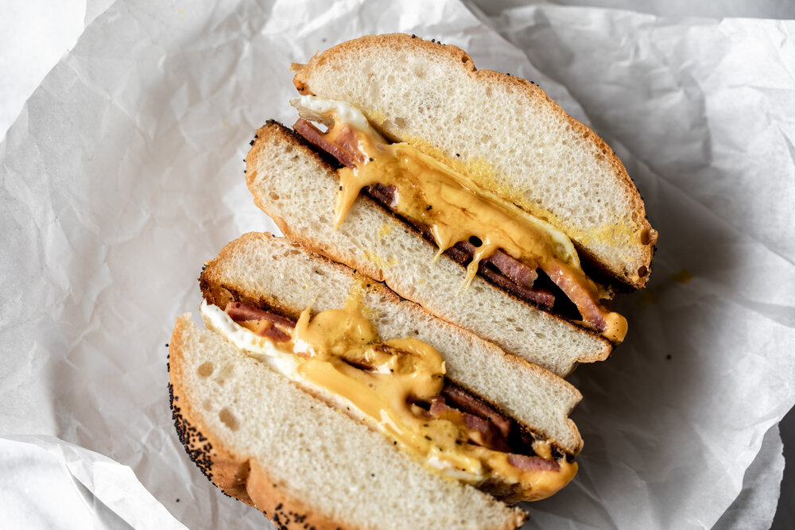

Taylor Ham Egg & Cheese Sandwich

Description
Indulge in the ultimate morning comfort with our Classic Taylor Ham Egg and Cheese Breakfast Sandwich. This iconic New Jersey favorite combines savory Taylor ham, perfectly cooked eggs, and gooey melted cheese sandwiched between a warm, toasted roll, creating a breakfast delight that's both hearty and satisfying.
Ingredients
- Taylor ham (also known as portk roll), sliced
- Eggs
- Cheese slices (American, Cheddar, or Swiss)
- Sandwich rolls or bagels
- Butter or cooking spray (for cooking the eggs)
- Salt and pepper
- Optional: Ketchup, hot sauce, or other condiment of your choice
Steps
- Heat a skillet or griddle over medium heat. While the skillet is heating up, slice the Taylor ham into thin slices.
- Once the skillet is hot, add the Taylor ham slices and cook for 2-3 minutes on each side until lightly browned and heated through. Remove the cooked Taylor ham from the skillet and set aside.
- In the same skillet, add a little butter or cooking spray. Crack the eggs directly into the skillet and cook to your desired level of doneness (such as scrambled, fried, or over easy). Season with salt and pepper to taste.
- While the eggs are cooking, slice the sandwich rolls or bagels in half and lightly toast them.
- Once the eggs are cooked to your liking, assemble the sandwiches by layering the cooked Taylor ham slices, eggs, and cheese slices on the toasted rolls or bagels.
- If desired, add any additional condiments such as ketchup or hot sauce.
- Serve the Taylor Ham Egg and Cheese Sandwiches immediately, and enjoy the delicious combination of flavors and textures in every bite!